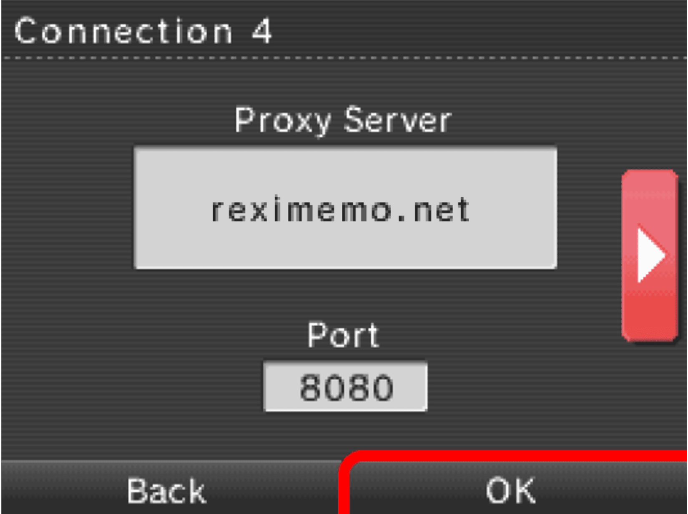
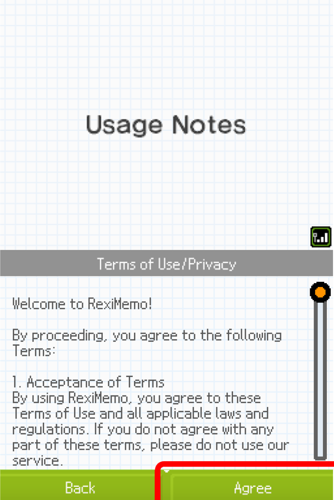

How to ConnectHere is a step-by-step guide on how to connect to RexiMemo! for newcomers. Please remember that RexiMemo! is very early in development. Expect often downtimes, bugs, missing features etc. The following guide is for the Nintendo DSi. If you are on a Nintendo 3DS family console, the steps to connect are pretty much the same as most settings are in the same place. Keeping that in mind, follow accordingly. Step 1Open System Settings on your DSi. Step 2Navigate to the 3rd page. Step 3Open your Internet settings. Step 4Open your Internet settings. Step 5Click on Advanced Setup. Step 6Click on your network connection. Step 7Click on Change Settings. Step 8Navigate to the DNS settings page. Step 9Disable "Auto-Obtain DNS". Step 10Click on Detailed Setup. Step 11Type the Sudomemo DNS (104.248.000.110) into the Primary DNS box (leave the Secondary DNS blank) then press the OK button. Step 12Navigate to the Proxy Settings page. Step 13Enable custom Proxy Settings. Step 14Click on Detailed Setup. Step 15
Type the RexiMemo! proxy server address (reximemo.sytes.net) into the Proxy Server and set the Port to 8080. Step 16Save your changes. Step 17Test your connection. Step 18Open Flipnote Studio. Step 19Launch Flipnote Hatena. Step 20Press the OK button. Step 21
If everything goes to plan, you will be greeted with the RexiMemo! Welcome page. Click Agree to enter RexiMemo! |